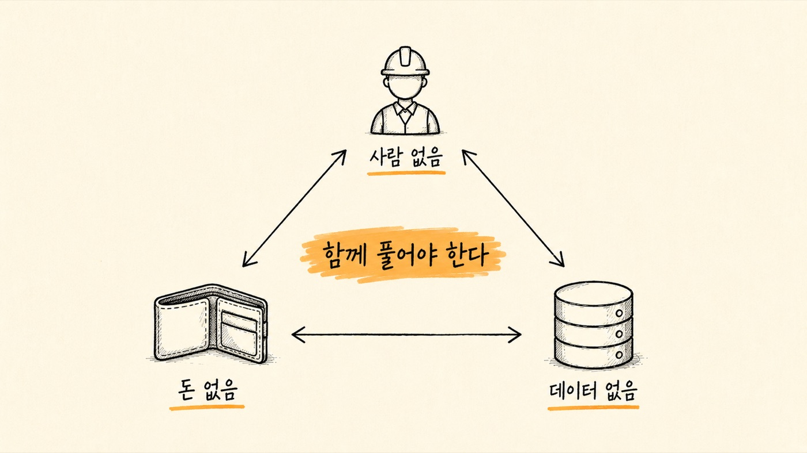
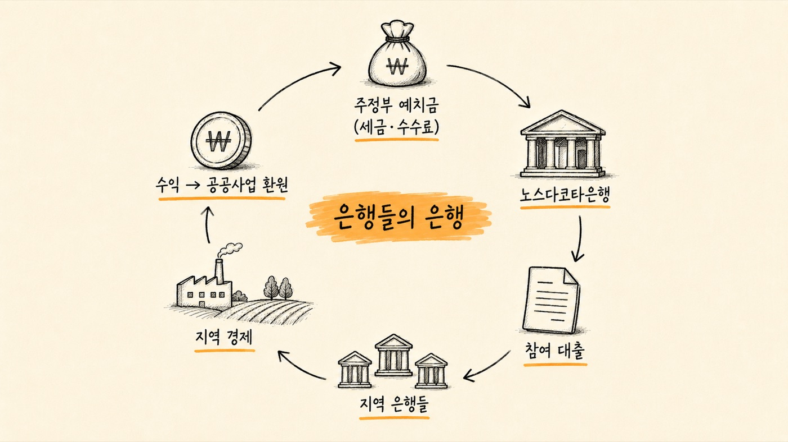
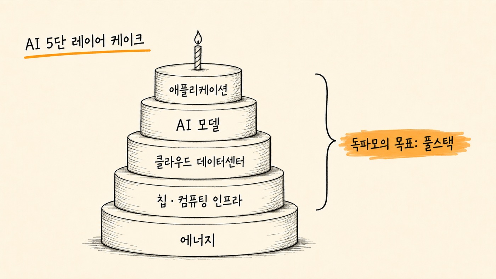
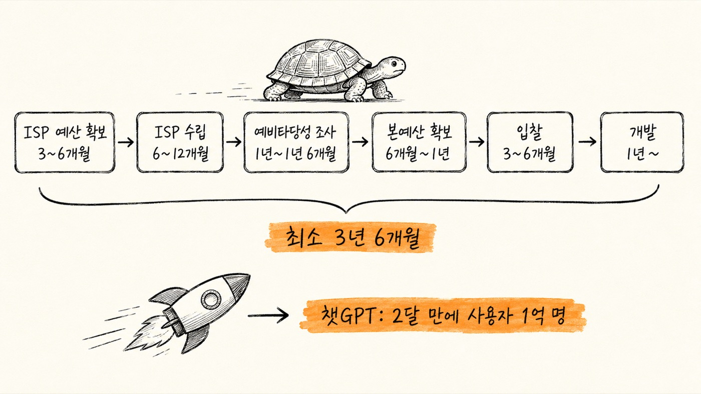
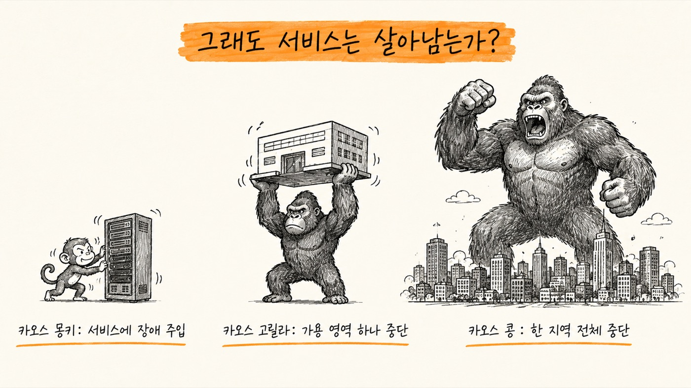
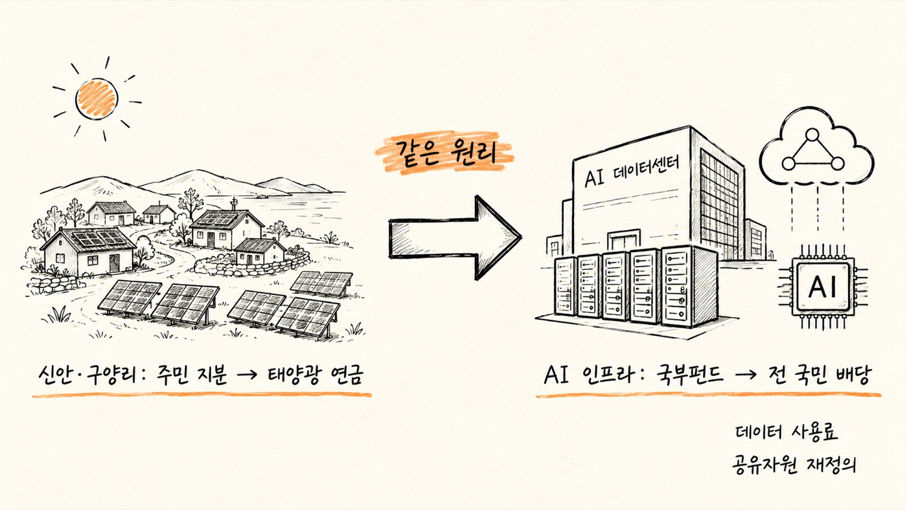

이제 마지막 장입니다. 그래서 우리는 무엇을 해야 할까요? 대한민국은 무엇을 해야 합니까?
대한민국은 무엇보다도 제조 강국입니다. 철강부터 반도체까지, 조선부터 포털까지 모두 가지고 있는 드문 나라입니다. 또 하나의 나라는 중국이지요. 전 세계가 미국 진영과 중국 진영으로 나뉘면서 대한민국은 이제 서방 진영의 독보적인 제조창으로서 지위를 누리게 됐습니다. 그런 점에서 제조업의 AI 전환은 대한민국에 가장 중요한 일 중 하나가 됩니다. 한국의 제조업은 어떻게 하면 AI 전환을 제대로 할 수 있을까요?
AI 전환의 걸림돌과 생태계적 관점의 부재
한국의 제조 중소·중견기업에는 세 가지가 없습니다.
우선 사람이 없습니다. 기존의 인력들은 대부분 나이가 많습니다. 이들은 AI를 알지 못합니다. 2024년 11월 대한상공회의소가 발표한 조사에 따르면 제조기업의 80.7퍼센트가 전문 인력이 없다고 답했습니다. ‘어떻게 충원하고 있나?’라는 질문에도 82.1퍼센트가 충원하고 있지 않다고 답했습니다.
두 번째로 돈이 없습니다. 73.6퍼센트가 AI 투자가 부담이 된다고 답합니다. 그중 33.1퍼센트는 매우 부담스럽다고 답했습니다. 중소기업으로 한정하면 전체의 79.7퍼센트가 부담이 된다고 답했습니다.
당연히 데이터도 없습니다. 데이터를 쌓으려면 디지털화가 되어 있어야 합니다. 상공회의소 보고서에서 대구의 한 제조업체는 “생산공정만 해도 AI로 전환하려면 데이터 축적을 위한 라벨·센서 부착, CCTV 설치, 데이터 정제뿐 아니라 이를 기획하고 활용하는 비용, 로봇 운영을 위한 맞춤형 솔루션 구축, 관련 인력 투입 등 기존에 생각지 못한 자금이 들어가는 상황”이라고 설명했습니다.
한국지능정보사회진흥원 조사에 따르면 “제조 데이터가 설비별로 분절적으로 구축되어 파편화되어 있을 뿐 아니라, 정보화 인식 부족으로 인해 실무자가 데이터를 수작업으로 찾아야 하거나 데이터 세트 구축이 업무 우선순위에서 밀려 체계적인 관리가 이루어지지 않는 상황이며, 목적에 따라 기존 데이터를 가공·재처리해야 하는 등 AI 학습용 데이터의 실질적 활용이 제한적이며, 개인정보 침해 이슈도 애로사항으로 확인되었고, 기술 측면에서는 AI 적용 가능성을 실감하지 못하고 자동화 단계를 벗어나지 못한 제조 현장이 다수 존재하며 노후화한 레거시 시스템 사용, 느린 IT 세대 전환 등으로 인해 AI 연계가 구조적으로 어려운 환경”입니다.
그러니 한국 산업의 AI 전환은 기본적으로 세 가지, 즉 돈이 없고, 사람이 없고, 데이터가 없는 상황을 전제로 하지 않으면 안 됩니다. 이 세 가지를 해결하지 못하는 어떤 정책도 실효를 거두지 못할 거라는 뜻입니다.
이 세 가지는 함께 풀지 않으면 안 됩니다. 얽혀 있기 때문이지요. 가령 돈이 없으면 사람과 데이터를 풀지 못합니다. 돈이 있어도 사람이 없으면 진도를 나가지 못합니다. 돈과 사람이 있어도 데이터가 없으면 무망합니다. 셋은 함께 풀어야 하는 문제입니다.

해결책으로 나아가기 전에 먼저 생태계에 관해 얘기하고 싶습니다.
생태계로 접근하지 않아 실패한 세 가지
삼성전자는 왜 파운드리(남의 칩을 위탁생산해주는 일)에서 TSMC에 뒤처지게 됐을까요? 파운드리는 ‘팹리스 - 디자인 스튜디오 - IP 기업 - 파운드리 - 패키징과 후공정’으로 이어집니다. 전문 칩 설계 회사가 설계도를 만들면, 디자인 스튜디오가 설계도를 파운드리의 공정에 맞게 다듬습니다. USB 포트와 같은 부품은 매번 설계를 하지 않고 IP 회사로부터 사 옵니다. 굳이 같은 걸 또 그릴 필요가 없기 때문입니다. 이때도 그 파운드리에서 만들어본 적이 있는 IP여야 바로 쓸 수가 있습니다. 그러니 만들어본 적이 있는 IP를 많이 갖고 있는 게 파운드리의 또 다른 경쟁력이 됩니다. 삼성과 TSMC는 여기서 10배쯤 차이가 납니다.
파운드리에서 칩을 굽고 나면 패키징과 후공정으로 보냅니다. 선폭을 무한정 가늘게 하는 데 한계가 있으니, 칩을 수직으로 쌓고, 수평으로 붙입니다. 그래서 패키징이 갈수록 첨단기술이 됩니다. 삼성전자는 이 모든 단계에서 TSMC의 생태계에 턱없이 밀립니다. 10배 작거나(IP 파트너 숫자), 10년 뒤처져(패키징 기술) 있다고들 합니다. 반도체 파운드리 경쟁이 진작에 생태계 전쟁으로 바뀐 것을 삼성전자는 알아채지 못했던 것입니다. 함께 성장하는 법을 삼성전자는 익히지 못한 것이지요.
혁신도시가 망한 것도 같은 이유입니다. 지방을 살린다고 허허벌판에 혁신도시를 만들었습니다. 젊은 부부는 대부분 맞벌이를 합니다. 남편이나 아내가 혁신도시로 발령이 난다고 해도 배우자가 취직할 일자리가 없으면 그 집은 내려가지 못합니다. 안 가는 게 아니라 못 가는 것입니다. 혁신도시는 자생적 생태계가 되지 못했습니다.
지방 도시를 살려보겠다고 너나없이 신도심을 만들었습니다. 인구가 늘지 않는데 신도심에 아파트를 그렇게 마구 지으면 원도심이 유령도시가 됩니다. 거의 대부분의 지방 도시들이 원도심 공동화라는 중병을 앓고 있습니다.
창원에서 부산은 직선거리가 50킬로미터도 안 되지만 마음의 거리는 500킬로미터라고 지역의 청년들은 말합니다. 자동차가 없으면 출퇴근을 할 수도 없기 때문입니다. ‘어차피 방을 구할 거면 서울로 가지!’라고 생각합니다. 청년들이 간절히 원하는 건 ‘통근 전철’입니다. 타당성 검토에서 늘 난항을 겪고 있다고 합니다. 생태계를 모르면 ‘늘’ 난항을 겪을 수밖에 없습니다.
위의 세 가지 사례의 공통점은 바로 생태계로서 접근하지 않았다는 것입니다. 생태계가 번성하기 위한 몇 가지 조건이 있습니다.
생태계가 번성하기 위한 조건
종 다양성
서로 다른 종이 얽히면서 생태계 전체를 지탱합니다. 먹이사슬로 얽히고, 수정을 도와주고, 분해와 재생산을 담당합니다. 19세기 중반 아일랜드 대기근은 종 다양성이 깨진 생태계의 괴멸적 위기를 보여주는 사례입니다. 단일 품종의 감자에 의존하던 아일랜드에 감자역병이 돌자, 1845년부터 1852년까지 100만 명이 굶어 죽었습니다.
에너지와 물질의 순환
태양에너지는 식물을 거쳐 동물과 미생물로 이어집니다. 이런 순환 구조가 깨지면 생태계는 무너집니다. 나무가 쓰러지면 곰팡이와 버섯이 큰 조각들을 분해하고, 세균이 그 조각들을 더 잘게 나눠 토양으로 되돌립니다. 순환해야 생태계입니다.
개방성과 연결성
닫힌 생태계는 유전적 고립으로 취약해집니다. 외부와의 유전자/종 교류는 생태계의 생존을 위해 반드시 필요합니다. ‘근친교배 우울증’ 또는 합스부르크 신드롬은 폐쇄된 가문 내에서 짝짓기가 거듭 되풀이될 때 일어나는 필연적 결과를 상징적으로 보여주는 사례입니다.
산업 AX를 위한 지역 금융
이제 본론으로 돌아갑시다. 제조공장은 주로 지방에 있습니다. 그러니 제조 AX는 곧 지방 생태계 살리기와 같은 말이 됩니다. 어떻게 하면 지방 생태계를 살릴 수 있을까요? 지방의 생태계가 번성하고, 그 기반 위에서 제조공장들의 AI 전환이 순조롭게 이뤄지려면 어떻게 하면 될까요?
돈부터 봅시다. 지방에는 실제로 돈이 없습니다. 금융자본은 수도권에 집중돼 있습니다. 2025년 금융위원회 자료에 따르면, 비수도권의 생산 비중GRDP은 전체의 약 47.7퍼센트를 차지하지만, 여신(대출) 비중은 34.5퍼센트에 불과합니다. 즉, 지역이 경제에 기여하는 만큼의 금융 지원을 받지 못하고 있으며, 그 격차(-13.2%p)는 전년보다 오히려 확대되었습니다. 지방은행의 시중은행 전환(DGB대구은행 → iM뱅크)과 저축은행·신협 등 상호금융의 수도권 영업 집중으로 인해 ‘지역 밀착’이라는 본연의 정체성도 갈수록 희석되고 있습니다. 벤처 투자 비중은 더 떨어져서 24.7퍼센트밖에 안 됩니다. 공장은 대부분 지방에 있는데, 돈은 수도권에 머뭅니다.
어떻게 하면 좋을까요? 배울 만한 해외 사례들이 있습니다.
미국 노스다코타은행 — 100년 흑자의 공공은행
미국의 노스다코타은행은 미국에서 유일하게 주정부가 소유하고 있는 은행입니다. 시중은행과 경쟁하지 않고 ‘은행들의 은행’ 역할을 합니다. 지역 은행이 감당하기 어려운 대형 대출에 참여하거나 학자금, 농업 자금을 지원합니다. 그런데도 2024년 순이익 2억 40만 달러를 기록했습니다. 100년 넘게 흑자를 유지하고 있으며, 지역 은행들의 건전성을 높이는 역할을 합니다. 도대체 어떻게 이럴 수 있었을까요?
주정부 예치금이라는 안정적이고 저렴한 자본줄
가장 큰 특징은 노스다코타 주정부의 모든 세금, 각종 수수료, 기금 예치를 법적으로 보장받는다는 점입니다. 일반 시중은행처럼 고금리 예금 유치를 위해 마케팅 비용을 쓰거나 고객 확보 전쟁을 벌일 필요가 없습니다. 2024년 말 기준 노스다코타은행은 약 71억 달러의 주정부 예치금을 보유하고 있으며, 이는 매우 안정적인 대출 재원이 됩니다.
시중은행과 경쟁하지 않는 ‘은행들의 은행’ 모델
노스다코타은행은 일반 시민을 대상으로 하는 소매 영업(예금, 대출 등)을 거의 하지 않습니다. 그 대신 지역 내 민간 은행들이 감당하기 어려운 큰 규모의 대출이나 위험이 따르는 혁신 산업 대출에 ‘참여 대출Participation Loan’ 형태로 자금을 보태줍니다. 즉, 민간 은행의 고객을 뺏는 경쟁자가 아니라 민간 은행의 대출 능력을 키워주는 파트너 역할을 합니다. 이를 통해 민간 은행의 파산을 막고 지역 금융 생태계를 건강하게 유지하며 본인들도 안정적인 이자 수익을 거둡니다.
극단적인 운영 비용 절감
주 전체에 지점이 단 하나(비즈마크 본점)뿐입니다. 일반 은행들이 지점 유지비, 수천 명의 직원 인건비, TV 광고 등 마케팅 비용으로 수익의 상당 부분을 지출하는 것과 대조적입니다. 마케팅을 거의 하지 않고 지점 관리 비용이 거의 들지 않기 때문에 영업 효율성이 일반 은행보다 압도적으로 높습니다. 2024년 연례 보고서에 따르면 노스다코타은행의 자본수익률ROI은 15.8퍼센트로, 미국 내 대형 은행들과 비교해도 최상위 수준입니다.
정치적 외풍을 차단한 지배구조
공공은행은 흔히 정치적 목적의 부실 대출로 인해 망가지기 쉽습니다. 하지만 노스다코타은행은 산업위원회라는 독립 기구가 관리합니다. 여기에는 주지사, 검찰총장, 농업 커미셔너가 포함되지만, 은행의 운영은 철저히 전문 경영인 체제로 돌아가며 ‘노스다코타의 산업, 농업, 상업 진흥’이라는 헌법적 목적에만 집중하도록 설계되어 있습니다.
보수적이고 다각화된 리스크 관리
주정부의 자금을 지키는 것이 최우선 순위이기에 매우 보수적으로 자금을 운용합니다. 농업(10%), 상업(38%), 주택(18%), 학자금(34%) 등 대출 포트폴리오를 적절히 분산하여 특정 산업의 위기가 은행 전체의 위기로 번지지 않도록 관리합니다. 2024년 순이익은 약 2억 40만 달러로 역대 최고치를 기록했습니다.
결론적으로 노스다코타은행은 공익을 위해 ‘퍼주는’ 은행이 아니라, 지역 은행들이 더 잘 영업할 수 있도록 뒤에서 자금을 공급하고, 그 과정에서 발생하는 이자 수익을 다시 주정부의 공공사업(학교 건설, 재난 복구 등)에 배당하는 선순환 구조를 확립했습니다.

은행 홈페이지의 소개 자료를 요약합니다.
- 설립 배경 및 사명노스다코타은행은 1919년 당시 외부 자본에 의해 농산물 가격이 억제되고 높은 대출 이자율로 고통받던 노스다코타주의 농민들을 보호하기 위해 설립되었습니다. 주의 농업, 상업, 산업 발전을 촉진하는 것을 기본 사명으로 하며, 오늘날에도 이 원칙을 유지하고 있습니다.
- 운영 원칙: 비경쟁과 파트너십가장 독특한 운영 방침은 민간 금융기관과 경쟁하지 않고 오히려 이들을 지원한다는 점입니다. 개인을 대상으로 한 소매 영업은 거의 하지 않으며, 지역 은행들이 감당하기 어려운 규모의 대출에 자금을 보태는 참여 대출(Participation Loan) 방식을 주로 사용합니다. 이를 통해 지역 금융 생태계를 파괴하지 않고 상생하는 구조를 갖추고 있습니다.
- 거버넌스와 독립성은행은 주지사, 검찰총장, 농업 커미셔너로 구성된 산업위원회(Industrial Commission)의 관리와 통제를 받습니다. 또한 금융 전문가들로 구성된 자문위원회가 운영 전반을 검토하여 정치적 외풍을 차단하고 전문성을 유지합니다.
- 자본 조달과 수익 배분은행의 예금 기반은 일반 시민이 아니라 주정부의 세금과 수수료 등 공공 자금입니다. 노스다코타주의 모든 공공 자금은 법적으로 노스다코타은행에 예치되어야 합니다. 여기서 발생한 수익은 주정부의 일반 회계로 전입되어 공공 프로젝트에 쓰이거나, 지역 발전을 위한 대출 프로그램의 재원 또는 은행의 자본금 확충에 사용됩니다.
- 안전성과 신뢰도은행은 연방예금보험공사의 보험에 가입되어 있지 않습니다. 그 대신 노스다코타주의 법에 따라 주정부의 신용이 모든 예금을 직접 보증합니다. 자금 운용에 있어서도 연방정부나 관련 기관이 보증하는 AAA 등급의 안정적인 유가증권에 투자하는 보수적인 전략을 취합니다.
- 주요 역할경제 발전을 위한 엔진 역할을 수행할 뿐 아니라, 재난 발생 시(예: 1997년 및 2011년 홍수) 복구 자금을 신속히 공급하는 안전판 역할도 합니다. 또한 미국 최초로 연방 보증 학생 대출을 시행하는 등 교육 지원과 인프라 구축에도 깊이 관여하고 있습니다.
독일 슈파르카세 — 지역을 떠나지 않는 돈
독일의 지역저축은행도 정말 배울 만합니다. 독일의 지역저축은행인 슈파르카세Sparkasse는 공공성을 기반으로 지방자치단체가 운영하는 공법상의 금융기관으로, 독일 내 가장 높은 인지도와 촘촘한 지점망을 보유한 대표적인 지역 기반 은행입니다. 비영리 원칙에 따라 지역 내 중소기업 및 주민에게 금융 서비스를 제공하며, 수익은 지역사회에 재투자됩니다. 다음은 홈페이지에 소개된 슈파르카세의 구조와 설립 목적입니다.
- 그룹의 구성과 규모독일 저축은행 금융그룹(SFG)은 약 510개의 회원사로 이루어진 유럽 최대의 금융 그룹입니다. 핵심은 독일 전역에 퍼져 있는 약 343개의 지역저축은행이며, 이를 지원하는 다섯 개의 주정부 은행, 공공 보험사, 자산운용사인 데카방크 등이 포함됩니다. 이들은 각기 독립적인 법인이지만 ‘저축은행’이라는 단일 브랜드 아래 결속된 독특한 연합체 구조를 가지고 있습니다.
- 설립 목적: 공공적 사무(Public Mandate)이 그룹의 존재 이유는 단순한 이윤 추구가 아니라 법에 명시된 공공적 임무를 수행하는 데 있습니다. 모든 사회 구성원에게 소득수준과 관계없이 금융 서비스를 이용할 수 있는 기회를 제공하는 ‘금융 포용’이 핵심입니다. 또한 지역 내 중소기업에 자금을 안정적으로 공급하여 지역 경제를 활성화하고 고용을 유지하는 엔진 역할을 수행합니다.
- 지역주의 원칙각 저축은행은 법적으로 지정된 해당 지역 내에서만 영업할 수 있습니다. 이러한 분권화된 구조 덕분에 지역에서 예치된 자금은 타 지역이나 수도권으로 유출되지 않고, 오직 해당 지역의 기업과 가계를 위한 대출 및 투자로만 쓰입니다. 이는 지역 경제의 자립도를 높이는 강력한 메커니즘이 됩니다.
- 이익의 지역사회 환원저축은행은 민간 주주에게 배당을 하지 않습니다. 운영 비용과 자본 확충을 위한 적립금을 제외한 수익은 해당 지역의 교육, 문화, 예술, 사회 복지 등 공익사업에 재투자됩니다. 독일 전역에서 매년 수억 유로가 이러한 방식으로 지역사회에 환원되어 주민의 삶의 질을 높이는 데 기여하고 있습니다.
- 독자적 생태계와 협력개별 은행은 독립적이지만, 전산 시스템 개발이나 마케팅, 리스크 관리 등은 그룹 차원에서 공동으로 수행하여 대형 시중은행과 경쟁할 수 있는 규모의 경제를 확보합니다. 위기 시에는 서로를 구제하는 공동 안전망(IPS)을 통해 100년 넘게 파산 없는 안정성을 유지해오고 있습니다.
독일 저축은행 금융그룹은 개별 은행들의 집합체임에도 불구하고, 글로벌 신용평가사들로부터 매우 높은 등급을 유지하고 있습니다.
- 신용 등급2025년 3월 피치(Fitch)와 모닝스타 DBRS(Morning-star DBRS)는 독일 저축은행 금융그룹에 A+(Stable) 등급을 부여했습니다. 이는 독일 국채 수준의 높은 신뢰도를 의미합니다.
- 자본 적정성2024년 말 기준 보통주자본비율(CET1)은 16.9퍼센트로, 독일 전체 은행 평균보다 훨씬 높습니다(참고: 한국 시중은행의 CET1은 보통 13~15퍼센트 수준입니다).
- 수익성최근 고금리 환경에서 예대 마진이 개선되어 2024년 순이익이 크게 증가했습니다. 2025년 금리 인하 국면에서도 견고한 영업이익을 유지할 것으로 전망됩니다.
독일의 이런 지역 금융의 가장 큰 특징이 바로 관계 금융Relationship Banking입니다. 연성 정보와 지역주의 원칙으로 구성됩니다.
- 연성 정보의 활용수치화된 재무제표(Hard Data) 대신 경영자의 도덕성, 가업 승계 계획, 지역 평판, 기술적 잠재력 등 장기간의 대면 접촉을 통해 축적된 비정형 정보를 대출 심사의 핵심 지표로 삼습니다. 이를 통해 담보가 없어도 신뢰를 바탕으로 자금을 공급합니다.
- 지역주의 원칙슈파르카세는 법적으로 해당 지자체 구역 내에서만 영업할 수 있습니다. 이는 지역에서 모은 예금이 타 지역이나 수도권으로 유출되는 것을 원천적으로 차단하며, 은행의 운명을 지역 경제의 흥망성쇠와 일치시킵니다.
- 하우스뱅크(주거래은행) 시스템독일 중소기업의 약 70퍼센트가 이들을 통해 자금을 조달하는 주거래은행 시스템을 유지합니다. 은행은 단순한 자금 공급자를 넘어 기업의 경영 컨설턴트 역할을 수행하며, 기업이 일시적 자금난에 처해도 대출을 회수(비가 올 때 우산을 뺏는 행위)하지 않고 끝까지 조력합니다.
여기에 수도권에 집중된 한국 금융과의 결정적 차이점이 존재합니다.
| 한국 금융 | 독일 지역 금융 | |
|---|---|---|
| 대출 심사 | 부동산 담보와 정형화된 신용점수에 의존 | 장기적 신뢰와 사업의 지속 가능성을 우선 |
| 수익 구조 | 주주 이익 극대화를 위해 수도권의 대형 가계대출이나 대기업 금융에 집중 | 지역 공헌과 산업 육성을 목적으로 하는 비영리 공공성 |
| 지배 구조 | 거대 은행이 전국의 지점을 통제하는 중앙집권형 | 수백 개의 독립된 지역 은행이 연합체를 구성하여 전산과 마케팅을 공유하는 분권형 |
이런 것을 보고 나면 비로소 왜 독일에는 히든 챔피언(세계 시장점유율 1~3위이면서 연매출 50억 달러 미만인 중소기업)이 1,500여 개나 되는지를 알 수 있습니다. 이런 ‘관계 금융’의 멋진 생태계가 있었던 것입니다. 산업 AX를 제대로 하고, 지역을 살리려면 이런 지역 금융을 활성화하는 것이 필수적입니다. 공장은 지방에 있고 돈은 서울에 머무는 구조를 그대로 둔 채 산업 AX를 제대로 하기는 대단히 어렵습니다.
지역 기반의 인재 생태계가 절실하다
이제 사람으로 가봅시다. 앞에서 본 것처럼 지역 제조업에는 사람이 없습니다. 지역의 거점 대학이 지역 인재 양성의 중심 역할을 할 수 있게 해야 합니다. 독일의 지역저축은행이 관계 금융으로 히든 챔피언을 만들어냈듯이 지역의 대학과 기업, 연구소들이 한 팀이 돼서 지역의 제조업을 살려야 합니다. 젊은 인재를 길러내고, 기존 인력들의 리스킬reskilling, 업스킬upskilling을 도와줄 수 있어야 합니다. 여기에는 대중교통의 확충이 반드시 함께해야 합니다.
부울경을 예를 들어봅시다. 앞에서 말한 것처럼 창원에서 부산은 직선거리가 50킬로미터도 안 되지만 ‘마음의 거리는 500킬로미터’라고 지역의 청년들은 얘기합니다. 자동차가 없으면 출퇴근을 할 수도 없기 때문입니다. 청년을 구하고 싶다면 청년들이 살고 일할 수 있는 여건을 함께 만들어줄 수 있어야 합니다. 그게 지속가능한 생태계를 만드는 방법입니다. 예를 들어 남편이 창원에서 일하고 있는 젊은 부부가 있다고 합시다. 아시다시피 중공업도시는 여성이 할 일이 아주 적습니다. 부인이 부산에서 일을 할 수 있다면 이 부부는 부울경 지역에서 오래 살 수 있을 것입니다. 그런데 부울경을 기껏 하나로 묶어놓고는 창원과 부산이 마음의 거리로 500킬로미터가 여전하다면 부울경 특구는 하나 마나 한 말이 되어버릴 것입니다. 젊은 부부가 함께 살기 어렵기 때문입니다. 이런 시도는 지속가능하지 않습니다.
생태계 성장을 위한 데이터 공유 연대
데이터 얘기를 할 차례입니다. 대한민국은 서방 진영 제1의 제조창입니다. 가장 강력한 양산 능력을 갖추고 있습니다. 피지컬 AI를 위한 여건을 제대로 갖추고 있는 셈입니다. 그러나 앞에서 본 것처럼 “제조 데이터가 설비별로 분절적으로 구축되어 파편화되어 있을 뿐 아니라, 정보화 인식 부족으로 인해 실무자가 데이터를 수작업으로 찾아야 하거나 데이터 세트 구축이 업무 우선순위에서 밀려 체계적인 관리가 이루어지지 않는 상황”입니다. 정부와 산업은행, 지역 금융과 거점 대학들이 제조업체들과 손을 잡고 함께 AI 전환을 위한 데이터 구축을 체계적으로 시도해야 합니다. 이 과정에서 피지컬 AI 솔루션 업체와 제조업체가 함께 성장할 기회를 가질 수 있을 것입니다. 제조업의 경쟁력이 크게 올라갈 뿐 아니라, 한국이 현장의 생생한 데이터로 학습을 마친 세계 최고의 피지컬 AI를 함께 가질 수 있게 된다는 뜻입니다. 말 그대로 생태계의 성장입니다. 크게 여섯 가지 기준을 가지고 시도할 수 있습니다.
‘독파모’와 K-휴머노이드 연합
독자 파운데이션 모델은 생태계로서의 지원 정책의 좋은 예입니다. ‘독파모(독자 AI 파운데이션 모델)’는 2027년까지 세계 최고 수준의 거대언어모델과 멀티모달(여러 개의 모드를 가진 것. 언어뿐 아니라 그림, 동영상 등을 처리할 수 있는 모델을 말한다) 모델을 확보하자는 국가 프로젝트입니다. 다섯 개 정예팀을 선발해, 최신 GPU를 비롯해 연구·개발을 지원해줍니다. 단계마다 한 팀씩을 떨어트리고 마지막 남은 두 팀에게는 수천 장의 최신 GPU를 몰아주고, 결과물은 오픈웨이트로 공개해 누구나 쓸 수 있게 합니다.
독파모를 개발하려면 어떻게 하면 될까요? 엔비디아 CEO 젠슨 황은 2026년 1월 스위스 다보스에서 열린 세계경제포럼에서 AI를 ‘5단 레이어 케이크’라고 말했습니다. 에너지, 칩과 컴퓨팅 인프라, 클라우드 데이터센터, AI 모델, 그리고 궁극적으로 애플리케이션 레이어로 구성된 구조라는 것입니다.

독파모는 그중 에너지를 제외한 넷을 목표로 합니다. 단순히 모델만 만들자는 게 아니라는 것이지요. 젠슨 황의 말처럼 AI는 다음과 같은 계층으로 이뤄져 있기 때문입니다.
AI 풀스택 생태계
실제 AX 경험(가전, 조선, 물류 …) / 실시간 서비스 최적화
모델 아키텍터 원천기술 / 학습 효율화 / 환각 억제
데이터 큐레이션 / 저작권 및 윤리 가이드라인 / 멀티모달 정렬
분산컴퓨팅 최적화 / 저전력 고효율 설계 / 국산 칩 생태계
독파모가 ‘바닥부터 제대로from scratch’를 원칙으로 하는 건 이 때문입니다. 그래야 인프라부터 서비스 단계까지 풀스택 생태계를 아우를 수 있습니다.
인프라를 예를 들어봅시다. GPU를 이 팀에 네 개, 저 팀에 네 개를 할당했다고 합시다. 그러면 분명히 어떤 때는 이 팀 GPU는 노는데, 저 팀 GPU가 모자라고, 어떤 땐 다 모자라는 일이 생길 겁니다. 만약 실시간으로 GPU 자원을 재할당해줄 수 있다면, 즉 고성능 GPU 하나를 다수의 사용자가 나누어 쓰거나, 반대로 다수의 GPU를 하나로 묶어 쓰는 일을 실시간으로 해줄 수 있으면 효율이 엄청 올라갈 것을 쉽게 알 수 있습니다. 이런 ‘GPU 분할 및 동적 할당’ 기술이 함께 발전해야 AI 개발을 제대로 할 수 있습니다.
같은 일을 절반의 전기만 쓰고도 해줄 수 있는 AI 칩을 만들 수 있다면 역시 효율이 크게 올라갈 것입니다. 같은 전기료로 두 배의 칩을 돌릴 수 있기 때문입니다. AI 개발 시간의 80퍼센트는 데이터 정제에 들어갑니다. 데이터 처리 기술이 크게 올라간다면 역시 경쟁력이 높아질 것입니다. 만든 다음에 즉시 서비스에 투입해 검증해볼 수 있으면 역시 경쟁력이 높아지겠지요.
독파모가 LG, 업스테이지, SKT, 네이버, 엔씨와 같은 모델 개발 회사만 뽑지 않은 게 그 때문입니다. 인프라와 하드웨어의 퓨리오사, 리벨리온, 래블업, 데이터의 플리토, 셀렉트스타, 에이아이웍스, 라이너, 네이버, 서비스와 산업 확산의 한글과컴퓨터, 올거나이즈, 포스코, 롯데, 크래프톤, 포티투닷이 모두 독파모입니다. 여기에 대학교를 모든 팀에 필수로 포함시켰습니다. 대규모 GPU 클러스터를 활용해 1,000억 개 이상의 매개변수를 가진 모델을 직접 학습시켜 본 경험은 도저히 책으로 배울 수 없기 때문입니다. 석사·박사 과정의 학생들이 귀한 실전 경험을 함께 나눠 가질 수 있게 한 것이지요.
다시 말해 독파모는 대한민국이 세계 최고의 AI 생태계를 갖기 위한 시도입니다. 이런 풀스택에 도전할 수 있는 나라는 전 세계에서 몇 안 됩니다. 반도체 칩을 만들 수 있으면서, 자체 포털을 갖고 있으면서, 데이터센터를 독자적으로 짓고 돌릴 수 있으면서, 자국어로 된 풍부한 디지털 자료를 갖춘 곳, 게다가 세계 최고의 제조 역량마저 갖춘 곳은 아주 드뭅니다. 독파모 프로젝트가 시작한 지 4개월 만에 전 세계 톱Top 20에 한국 모델이 몇이나 들어간 건 그 때문입니다. ‘주목할 만한 모델’에는 다섯 개 모델이 발표와 동시에 모두 포함됐습니다.
K-휴머노이드 연합 — 처음부터 생태계로
K-휴머노이드 연합도 마찬가지입니다. ‘대한민국이 2030년까지 휴머노이드 로봇 분야에서 세계 최강국이 되자!’는 프로젝트입니다. 2030년까지 R&D, 펀드 조성, M&A 지원 등을 포함해 총 1조 원 이상의 민관 투자를 추진합니다. 2028년까지 무게 60킬로그램 이하, 50개 이상의 관절, 20킬로그램 이상의 물체 운반, 초속 2.5미터 이상의 이동 능력을 갖춘 고사양 로봇을 개발합니다. 물론 이 목표는 상향될 수 있습니다. 로봇의 ‘뇌(AI)’, ‘몸(하드웨어)’, ‘심장과 신경(배터리 및 반도체)’을 동시에 개발하는 전방위 전략, 즉 풀스택 도전입니다. 이 프로젝트도 벤처와 대기업이 한 팀을 이뤄 생태계로 도전합니다. 처음부터 생태계로 시작하는 것입니다. 다음과 같습니다.
- AI 두뇌투모로로보틱스(비전 AI 및 제어 알고리즘)
- 본체로브로스(이족보행 플랫폼)
- 손/모터로보티즈(감속기 및 액추에이터), 패러데이다이나믹스(고토크 모터)
- 배터리LG에너지솔루션
- 수요처LG전자(스마트 팩토리 및 서비스 로봇 실증)
- AI 두뇌투모로로보틱스
- 본체레인보우로보틱스(이족보행 및 양팔 로봇)
- 손/모터에이딘로보틱스(촉각 센서 및 핸드), SPG(정밀 감속기)
- 배터리삼성SDI
- 수요처CJ대한통운(물류센터 내 비정형 화물 상하차 실증) · 최근 롯데글로벌로지스도 실증기업으로 참여
- AI 두뇌투모로로보틱스
- 본체/손/모터홀리데이로보틱스
- 수요처SK에너지(울산 정유공장 내 위험 지역 순찰, 밸브 조작 실증)
- AI 두뇌투모로로보틱스, 부산대학교
- 본체/손/모터에이로봇
- 배터리삼성SDI
- 수요처HD현대미포, HD현대로보틱스
예전과 달리 이처럼 AI 전환이 생태계로 이뤄지고 있는 것은 정말 반가운 일입니다. 건강한 숲이 스스로 번성하듯 경쟁력을 갖춘 생태계는 오래도록 지속가능합니다. 허허벌판에 건물 몇 개를 꽂은 혁신도시와는 애초에 궤가 다른 것이지요.
시대와 불화하는 제도들
글을 마치기 전에 시대와 불화하는 제도에 대해서 꼭 말씀을 드리고 싶습니다.
AI를 쓰면 대체 뭐가 좋을까요? 2019년 7월 탈북한 모자가 숨진 채 발견됐습니다. 경찰은 사망 시점을 2개월 전으로 추정했습니다. 경찰 관계자는 “아직 최종 부검 결과가 나오지 않았지만, 여러 정황상 모자가 굶어서 숨진 것으로 추정된다”고 밝혔습니다. 2014년에는 세 모녀가 생활고로 스스로 세상을 떠났습니다. 마지막 집세와 공과금, 죄송하다는 유서를 남기고 스스로 생을 마감했습니다. 이들은 기초생활보장제도나 의료급여제도의 대상이었지만 혜택을 받지 못했습니다. 장애인, 한 부모 가정 등 전형적인 취약계층으로 분류되지도 않았습니다. 송파구청 측은 “동 주민센터에서 기초생활보장 수급자를 발굴하는데 박 씨 모녀는 직접 신청을 하지 않았고, 주변에서도 이들에게 지원이 필요하다는 요청이 없었다”고 했습니다.
AI는 이런 가족들을 구해줄 수 있습니다. 소득, 재산, 건강보험, 고용 등 이곳저곳에 흩어져 있는 데이터들을 통합해서 분석하면 AI는 이런 사각지대에 있는 사람들을 선제적으로 예측하고 발굴할 수 있습니다. 복지사가 찾아가서 ‘사정이 아주 어려워지실 것 같은데, 이런저런 혜택이 있으니 받으시라’고 말할 수가 있는 것입니다.
AI가 거들 수 있는 곳들 — 공통분모는 하나다
소득, 재산, 건강보험, 고용 데이터를 통합·분석하면 사각지대의 사람들을 선제적으로 예측·발굴할 수 있습니다.
산불은 해마다 나고, 그 규모는 매년 커집니다. 여름이면 남해에 적조가 들이닥칩니다. 서울도 예외가 아니어서, 큰비가 오면 강남이 물에 잠깁니다. 기상청, 소방청, 지자체 곳곳에 이리저리 흩어진 데이터를 통합하고 연결하면 AI가 거들 수 있습니다. 과거 재난 발생 패턴, 실시간 기상 정보, 시설물 노후도 데이터를 AI가 결합·분석하면, 재난 발생 확률이 높은 지역과 시간을 정교하게 예측하고 사전 예방 조치를 지원할 수 있습니다.
청년들이 해마다 전세 사기로 고통을 겪고 있습니다. 투기꾼이 갭투자로 수백 채를 사들이다 파산하면 피해자가 눈덩이처럼 불어납니다. 강남에선 자기들끼리 사고파는 척하며 허위거래로 호가를 올립니다.
부동산 등기 데이터, 부동산 거래 데이터, 국세청 세금 신고 데이터, 도시계획과 개발 정보를 통합하면 AI가 부동산 시장을 투명하게 하고, 세수를 확보하는 데 기여할 수 있습니다. 실제 시장의 위험(전세 사기, 다중 담보, 허위거래)은 소유와 점유, 담보와 임대, 금융 데이터의 단절에서 발생합니다. 이들을 통합하면 AI는 위법 의심 거래를 자동 추출하고, 다중 담보와 전세 사기를 바로 잡아낼 수 있습니다.
국정감사철이면 국회로 엄청난 종이 서류들이 들어갑니다. 의원들이 요구한 자료들입니다. 조금 과장하자면 1톤 트럭이 필요해 보이는 곳들도 있습니다. 다 읽을까요? 디지털 시대에 굳이 그 많은 종이를 그렇게 낭비해야 할까요? 똑같은 자료를 의원실마다 종이로 받아보아야 할까요?
정부 - 국회 문서 유통을 의정자료전자유통시스템으로 일원화하면 AI가 의원들을 도울 수 있습니다. 문서의 핵심을 요약해주고, 관련하여 국회에서 있었던 과거의 질의와 답변을 정리해줄 수 있습니다. 그 질문과 답변에 이어서 올해는 무엇을 확인해야 할지를 조언해주고, 관련한 해외 사례를 알려줄 수도 있습니다. 무엇보다 오간 모든 내용이 다시 의정을 돕는 AI의 학습에 쓰이게 됩니다. 아주 훌륭한 되먹임 구조입니다.
시대와 불화하는 제도들이 아주 많습니다.
3년 6개월 걸리는 조달
챗GPT는 2022년 11월 30일에 나왔습니다. 나온 지 두 달 만에 사용자가 1억 명이 넘었습니다. 역사상 가장 빠른 기록입니다. 대한민국 정부가 챗GPT와 같은 인공지능을 제대로 써보려면 어떻게 해야 할까요? 챗GPT가 나타나기 3년 6개월쯤 전인 2019년 5월에 그것을 예견하기만 했으면 됩니다. 일이 대단히 순조롭게 된다면 3년 6개월 뒤 챗GPT가 나올 때 딱 맞춰 쓸 수 있습니다. 안전하게 하자면 2016년쯤에 예견을 해야 합니다.

대한민국 정부에서 300억이 넘어가는 정보화 사업은 최소 3년 6개월, 길면 6년 6개월이 지나야 시작할 수 있습니다. 조달 과정이 그만큼 길고 복잡하기 때문이지요. 우선 ISP Information Strategy Planning(정보전략계획)와 같은 사전계획 검토 과정을 반드시 거쳐야 합니다. 이 예산을 확보하는 데 3~6개월이 들어갑니다. 승인이 되면 6~12개월 동안 정보화전략계획을 수립한 다음, 그것을 바탕으로 1년에서 1년 6개월 동안 예비타당성조사를 거칩니다. 그러고 나면 다시 반년에서 1년 동안 본예산을 확보해야 하고, 그게 끝나면 비로소 업체를 선정하는 입찰을 3~6개월 진행합니다. 그러고 나서야 개발이 시작되는데, 이것도 최소한 1년이 걸립니다. 문제는 3년 6개월 전의 기획으로는 이제 아무것도 할 수가 없다는 것입니다. 너무 낡은 이야기가 돼버렸기 때문입니다.
7년 걸리는 교육과정
국가교육과정은 대한민국 정부(교육부)가 초·중·고등학교 교육의 목표와 내용, 운영 기준 등을 국가 수준에서 정해 고시한 기본 교육 계획입니다. 말하자면 교육의 헌법과도 같습니다. 현장의 교사들은, 형식은 헌법이나 내용은 조례나 시행규칙에 더 가깝다고 말합니다. 교육과정이 아주 꼼꼼하게 설계돼 교사의 재량이 발휘될 공간이 좁다는 것입니다. 7~10년에 한 번씩 바꿉니다. 2000년대 들어 수시로 개정하기로 했다고 하지만, 최근 사례를 보면 2009년, 2015년, 2022년에 개정했습니다.
지금 적용 중인 교육과정은 2022년 개정 교육과정입니다. 챗GPT가 존재하지 않던 시절에 만들어졌습니다. 교육과정은 혼란을 방지하기 위해 학년별로 순차적으로 적용됩니다. 2024년에 초등학교 1, 2학년부터 적용을 시작해 2025년에 초 3~4, 중 1, 고 1까지 확대 적용하고, 올해 초 1~6 전체, 중 1~2, 고 1~2 학생들에게 적용합니다. 중 3과 고 3은 기존의 2015 개정 교육과정 적용 대상입니다. 다시 말해 중 3과 고 3은 10년 전에 정한 교육과정으로 배운다는 것입니다. 이게 맞나요? 세상이 대한민국 교육부를 위해 가만히 웅크리고 있다가, 7년에 한 번씩, 10년에 한 번씩만 딱딱 바뀔까요? 대한민국의 중 3, 고 3은 무슨 죄를 지어서 10년 전에 정한 교육과정을 배워야 합니까?
인공지능은 마치 증기기관과 같습니다. 증기기관이 바꾼 건 공장만이 아닙니다. 부의 원천이 토지에서 자본과 기계로 바뀌었습니다. 농민이 도시 노동자로 옷을 갈아입었고, 귀족 대신 자본가 계급이 등장했습니다. 왕정은 입헌군주제가 아니면 민주정이 됐습니다.
옛 질서들이 시대의 변화에 순응했을까요? 업종별 장인조합 길드는 오랫동안 방적기를 이용한 대량생산에 저항했습니다. 루이 16세는 끝내 18세기 말의 프랑스를 보지 못했습니다. 세금 부담은 평민과 부르주아에게 집중되고 있었지만 그는 여전히 절대왕정을 고수하고, 신분제를 강화하며, 면세특권을 놓지 않았습니다. 그래서? 절대왕정은 폐지됐고, 국왕은 처형됐지요.
AI의 시대입니다. 기술의 변화는 갈수록 속도를 더합니다. 지난 기술의 어깨 위에서 다음 기술이 시작하기 때문입니다. 지금의 조달체계, 지금의 교육과정은 말하자면 옛 질서입니다. 길드처럼, 귀족정처럼, 면세특권처럼 시대와 불화합니다.
구시대의 유물, 보안정책
보안정책도 대표적인 구시대의 유물입니다. 거슬러 올라가면 우리는 시대와 맞서 두고두고 후환을 낳은 사례를 가지고 있습니다. 대표적인 게 공인인증서입니다. 1997년 OECD는 다음과 같은 암호화정책 권고안을 내놓습니다.
일찍이 1997년에 이런 국제적인 권고안이 나왔음에도 한국 정부는 정작 이들 중 어떤 것도 지키지 않았습니다. 그 결과, 시민들과 산업계가 십수 년 동안 엄청난 고통을 당해야 했습니다. 실제로 한국 정부가 한 일을 OECD의 권고안에 비추어보면 다음과 같습니다.
- “법을 준수하는 한 어떤 수단이든 선택할 수 있어야 한다”한국 정부는 공인인증서 하나만을 강제했습니다. 다른 모든 수단들이 제초제를 뿌린 듯 죽어갔습니다.
- “암호화 도구는 시장의 요구에 따라 발전해야 한다”한국 정부가 단 하나의 기술만 강제하는 그 십수 년 동안 인증에 관한 어떤 신기술도 한국에선 설 자리가 없었습니다. 결국 안면인식, 지문인식과 같은 편리한 수단들은 모두 해외 기업의 차지가 되었습니다.
- “국제적으로 호환할 수 있도록 표준이 함께 발전해야 한다”공인인증서는 한국의 전자상거래를 갈라파고스로 만들었습니다. 유명한 ‘천송이 코트’ 발언도 이 때문에 벌어진 일이었습니다. 정부는 미래부, 금융위, 산업부, 문체부, 여가부, 공정위, 방통위 등 10개 부처와 쇼핑몰, 카드, PG 등 관련 업계, 공공기관 등 25명으로 구성된 민관 합동 ‘전자상거래 규제개선 태스크포스’를 구성해 공인인증서 폐지 등 규제 개선에 적극 나선다고 했지만 어처구니없게도 공인인증서를 exe 실행 파일로 대체하는, 보안에는 훨씬 더 나쁜 조처를 남긴 채 서둘러 마무리하고 맙니다. 이 갈라파고스에서 저 갈라파고스로 이동한 것입니다.
- “암호화 수단을 제공하는 개인과 조직(정부 포함)은 반드시 그에 상응하는 책임을 져야 한다”공인인증서가 끈질기게 살아남은 데는 잘못된 법도 큰 몫을 했습니다. 공인인증서를 쓰기만 하면 금융기관의 책임을 면책해주었기 때문입니다. 그러니 금융기관들로서는 다른 암호화 수단을 쓸 이유가 없었습니다. 사용자를 보호하기 위한 암호화가 엉뚱하게 금융기관만을 보호하고 그만큼 사용자의 피해를 외면하도록 해버린 것입니다.
- “자국의 암호화 수단이 국제 간 거래에 방해되지 않도록 해야 한다”말할 것도 없이 국제 간 거래에 치명적인 방해가 됐습니다.
모바일도, 클라우드도 쓰지 못한다니!
현재의 보안인증으로는 공무원들이 모바일로 일을 할 수 없습니다. 2026년에 공무원들이 모바일로는 일을 할 수가 없다는 것입니다. 이것은 보안 당국이 얼마나 무능한가를 보여주는 한 방증입니다. 클라우드도 제대로 쓸 수 없고, 모바일도 쓸 수 없는 보안정책은 대체 누구를 위한 것일까요? 보안 전문가인 고려대 김승주 교수는 국정원이 사이버 공간의 보안을 맡는 게 적절하지 않다고 말합니다. 국가정보원법에 따르면 국정원은 국가안보와 국가기밀 보호만을 맡게 되어 있는데, 사이버 공간에서는 ‘국가안보 및 국가기밀급 정보’뿐 아니라 정부와 공공 영역 전반을 포괄하도록 설계가 되어 있어서 구조적 비대칭이 있다는 것입니다. 미국은 국방과 외교, 안보에 관련한 기밀정보는 국가안보국NSA이 담당하지만 정부와 공공 영역의 일반적인 정보에 대한 사이버 위협 대응 및 민관정보 공유는 사이버 보안 및 인프라 보안국CISA이 맡고 있습니다. 가장 강력한 감청과 공격 역량을 가진 조직이 국가 전체의 사이버 공간을 통제해서는 안 된다는 원칙 아래 역할을 나눠 맡고 있다는 것입니다. 국정원과 같은 정보기관의 본질은 비밀을 수집하고, 제로데이 취약점을 은닉 활용하며, 침투 감청 공격 역량을 유지하는 데 있는 반면 공공안전 차원의 사이버 보안기관은 취약점을 신속히 공개하고, 패치하며 투명한 사고 보고로 피해 확산을 막는 데 목표를 둡니다. 취약점을 숨겨야 하는 조직이 동시에 취약점을 제거하는 역할까지 수행하는 건 상충하는 목표가 된다는 것입니다.
무엇보다도 2026년에 모바일도 못 쓰게 하고, 클라우드도 못 쓰게 하는 조직이 보안을 계속 맡고 있다는 건 전혀 적합하지 않습니다. AI는 데이터를 먹고 삽니다. 일을 할수록 데이터가 쌓이는 구조여야 정부를 AI 정부로 만들 수 있습니다. 각 부처가 제각기 서버를 끌어안고 사일로처럼 일을 하고 있으면 천년이 지나도 AI 정부는 만들 길이 없습니다. 클라우드는 AI를 위한 기본이 됩니다. 그러니 질문을 바꿔야 합니다. “이러이러한 규정을 충족해야 민간 클라우드를 쓸 수 있다”는 틀렸습니다. “민간 클라우드를 쓸 수 있기 위해서는 보안규정이 이렇게 발전해야 한다”가 맞는 말입니다. “모바일로 효율적으로 일을 하기 위해서는 보안규정이 이렇게 발전해야 한다”고 먼저 말할 수 있어야 그 기관은 보안기관으로 자격이 있습니다. 시대에 뒤처진 보안규정이 사고는 제대로 막지도 못하면서 진보에 발목을 제대로 잡고 있는 게 지금의 상황입니다.
용역으로 AI 정부를 만들 수 있을까?
2025년 9월 26일 대전 국가정보자원관리원에서 불이 났습니다. “재해복구시스템Disaster Recovery: DR이 있어서 금세 재가동할 거다”, “백업을 하고 있어 3시간 내 가동이 될 거다”…… 약속들이 많았지만 하나도 맞지 않았습니다. 공주에 무려 전자기파EMP 공격에도 버틸 수 있는 재해복구센터가 있다고 했지만 이것도 작동하지 않았습니다.
1년도 더 전인 2024년 1월 대한민국 정부는 디지털 사고에 대한 종합대책을 발표한 바 있습니다. ‘철저한 상시 장애 예방, 신속한 대응·복구, 서비스 안정성 기반 강화’가 3대 추진 전략이었습니다. 주요 내용은 다음과 같습니다.
○ 이번 종합대책은 지난 지방행정전산서비스 장애와 같은 대민서비스 중단 사고를 사전에 예방하며, 신속하게 대응·복구하는 장애관리 체계를 구축하고,
○ 나아가 장애를 근원적으로 방지할 수 있도록 정보시스템 구축·운영사업 관련 제도와 기반시설(인프라) 전반을 전면 개편하는 것을 기본방향으로 하고 있다.
□ 정부는 종합대책 수립을 위해 지난 11월 29일부터 국무조정실장을 단장으로 14개 기관이 참여하는 범정부 TF를 운영하였으며,
○ 디지털플랫폼정부위원회, 기업인, 학계 등 다양한 분야의 민간 전문가의 의견을 수렴하여 종합대책을 수립하였다.
○ 특히, 이번 종합대책은 지난해 장애 대처 과정에서 신속한 인지·복구가 이루어지지 못했고, 민원·행정처리를 포함한 적절한 대응·조치가 부족했던 점을 개선하는 데 중점을 두는 한편,
○ 과거 30년간 디지털정부가 발전하는 과정에서 행정·공공기관의 정보시스템이 급격히 증가하며 누적된 복잡성에 대한 대응력을 확보하고 노후화 및 구조적 제약을 근본적으로 해소하는 방안을 포함하고 있다.
말하자면 지난 30년간 누적된 복잡성에 대한 대응력을 확보하고, 노후화 및 구조적 제약을 근본적으로 해소하는 종합대책이었습니다. 그런데도 이런 사고가 난 것입니다.
2022년 카카오 장애가 났을 때 〈시사인〉에 “카카오 먹통 사태가 남긴 세 가지 질문”이라는 글을 실은 적이 있습니다.
이번에 불이 난 것은 정전에 대비해 SK C&C 데이터센터가 보유한 배터리라고 한다. 배터리는 화재 위험이 있다. 당연히 다른 건물에 두거나, 방화벽으로 고립된 공간에 설치해야 한다. 물로는 불을 끌 수가 없으니 하론 가스나 이산화탄소 소화기가 자동으로 작동되게 해두어야 한다. 바이패스, 즉 배터리 쪽으로 가는 전원을 차단할 수 있는 기능도 제대로 작동했어야 한다. 그랬다면 전체 전원을 내릴 필요는 없었을 것이다. 전원이 이중화돼 있으면 한쪽 전원을 차단해도 다른 쪽 전원이 살아 있다. 또한 배터리는 통상 불이 나기 전에 온도가 올라간다. 온도센서가 있었는지, 일정 온도 이상이면 전원이 자동으로 차단되고 운영자에게 경고가 가는지, 소화기는 자동으로 작동하도록 돼 있었는지를 확인해야 한다. 게다가 같은 층에 예비발전기를 위한 경유 1만 5,000L가 함께 보관돼 있었다. 화재가 자칫 대형 폭발로도 이어질 수 있었다는 것이다. 이런 장애가 발생했을 때의 프로토콜을 SK가 제대로 갖추고 있었는지도 확인이 필요하다.
4년 전에 쓴 글입니다. 배터리는 화재 위험이 있으니 당연히 다른 건물에 두거나, 방화벽으로 고립된 공간에 설치해야 한다고 썼습니다. 대전 국가정보자원관리원은 그렇게 하지 않았습니다. 글의 나머지 부분은 아래와 같습니다.
2001년 9·11 테러로 뉴욕의 세계무역센터(WTC)가 참혹하게 붕괴됐다. 25개 층에서 직원 3,700명이 일하고 있던 모건스탠리 투자은행의 본사도 통째로 사라졌다. 하지만 모건스탠리는 살아남았다. 원본을 고스란히 저장해둔 재해복구 시스템이 가동됐기 때문이다. 제대로 된 복구 시스템을 갖추지 못한 많은 회사들이 건물 붕괴와 함께 사라졌다. 이후로 전 세계에서 재해복구 시스템에 대한 대대적인 투자가 시작됐다. 21년 전 얘기다.
‘카오스 몽키’라는 개념이 있다. 넷플릭스에서 나왔다. ‘야생의 원숭이가 무장을 한 채 우리 데이터센터에서 난동을 부려도 우리 서비스는 살아남을 수 있을까?’라는 개념이다. 카오스 몽키와 카오스 고릴라, 카오스 콩이 있다. 몽키는 서비스에 장애를 주입해보는 일이다. 그래도 서비스가 견디는지를 보는 것이다. 고릴라는 가용 영역 하나를 통째로 날려보는 것이다. 예를 들어 서울에 데이터센터 두 곳을 운용하고 있었다면 그중 하나의 전원을 끄고, 남은 데이터센터가 서비스를 이어받아 중단 없이 가동하는가를 본다. 콩은 한 지역 전체의 가동을 멈추는 것이다. 서울의 데이터센터 전체 가동을 멈춘 뒤 다른 도시나 다른 나라의 데이터센터들이 제대로 이어받는지를 보는 것이다.
재해복구 시스템은 말 그대로 ‘재해’에 대비하는 시스템이다. 이번 사태는 단지 데이터센터의 전원이 예고 없이 내려간 것이다. 서버도, 사람도 다친 데 없이 고스란히 남았다. 이것을 재해라고 부른다면, 얼마나 큰 재해라고 할 수 있을까?

건물이 통째로 무너져도 작동하는 게 재해복구 시스템이라고 썼습니다. 그게 작동하는지를 ‘카오스 몽키’로 주기적으로 점검해야 한다고 했습니다. 3년 전 얘기입니다. 사고가 나기 1년 전에는 정부 스스로 30년간 쌓인 복잡성에 대응할 종합대책을 내놓기도 했습니다. 그래도 안 됐습니다. 왜 이럴까요?
영국의 사례로부터 배울 수 있습니다. 영국 의회 공공행정위원회는 “정부와 IT—바가지의 공식: 새로운 접근이 필요한 때Government and IT—“a recipe for rip-offs”: time for a new approach”라는 리포트를 발표하며 1) IT 전문성 부족, 2) 중앙집중식 수평적 IT 거버넌스 부재, 3) 소수의 대형 민간 공급업체와의 대규모 장기 계약 의존을 주요 문제로 지적합니다.
우리도 마찬가지입니다. 전문성이 부족합니다. 고시 출신의 공무원들은 IT를 모릅니다. 순환 보직은 문제를 더 키웁니다. 한자리에 채 2년을 근무하지 않습니다. 전문성을 앗아갈 뿐 아니라 면피에도 그만인 구조입니다. 종합대책을 발표하고 조금만 있으면 다른 보직으로 옮겨갑니다. 내가 할 게 아니니 새로운 정책을 마구 던져도 그만입니다. 이어받은 후임자는 정책이 잘 안되면 전임자 탓을 하면 됩니다.
종합적인 IT 거버넌스도 당연히 부재합니다. 제품 요구사항을 담은 문서PRD 한 장 쓰지 못하는 간부가 책임을 맡습니다. 그러니 시스템 설계가 제대로 되기가 어렵고, 된들 담당 공무원은 까막눈일 때가 많습니다. 모든 개발은 외주 개발사에 맡기는데, 갑을병정무기경신…… 하청에 하청을 거듭해 반토막이 난 예산을 작은 중소기업이 초급 개발자를 데리고 개발하기가 일쑤입니다.
개발이 끝나면 개발사는 떠나고 운영사가 뒤를 잇는데, 운영 계약 기간은 대개 1~2년입니다. 두세 번 운영사가 바뀌고 나면 개발 히스토리를 아는 사람은 거의 아무도 남아 있지 않습니다. 이때쯤부터 무서워서 시스템을 건드리지 못하는 상태가 됩니다.
이래서는 AI 전환에 성공할 수가 없습니다. AI는 데이터를 먹고 삽니다. 데이터를 쓰려면 클라우드가 기본이 됩니다. 그런데 시스템이 이 지경입니다. 애초에 불가능한 얘기가 됩니다. 모두가 알다시피 정부는 클라우드를 제대로 운용할 전문성이 없습니다. 영국 정부가 일찍이 2017년부터 ‘민간 클라우드 우선’ 정책을 편 게 그 때문입니다. 몇억씩 하는 민간 개발자의 연봉을 감당할 수도 없거니와, 그 많은 클라우드 기반의 서비스를 ‘바퀴를 다시 발명하듯’ 만드는 게 옳지도 않기 때문입니다.
시민들의 전문성을 활용해야 합니다. 영국 정부의 선례가 있습니다.
2011년 당시 영국 정부는 무려 2,000여 개의 부처 및 정부 기관 웹사이트를 운영하고 있었습니다. 모두 따로 놀았습니다. 온라인 공공 서비스 이용률은 민간 부문에 훨씬 뒤처져 있었고, 시민들에게는 끔찍한 경험을, 정부에게는 막대한 비용을 초래했습니다.
IT 프로젝트는 빈번히 실패했습니다. 2002년 시작한 NHS(국가보건서비스, 건강보험) 국가 IT 프로그램은 96억 달러 규모로 출발했지만 실패에 실패를 거듭하며 총비용이 무려 195억 달러까지 올라갔습니다. 정확한 비용은 아무도 몰랐습니다. 영국 정부의 ‘비즈니스 링크’라는 웹사이트는 500페이지 정도의 소규모 사이트였지만 외주로 운용한 덕분에 해마다 7,700만 달러의 비용을 쓰고 있었습니다.
2011년 영국 의회 공공행정위원회는 “정부와 IT — 바가지의 공식: 새로운 접근이 필요한 때”라는 리포트를 발표하며 IT 전문성 부족, 중앙집중식 수평적 IT 거버넌스 부재, 소수의 대형 민간 공급업체와의 대규모 장기 계약 의존을 주요 문제로 지적했습니다. 영국 정부는 ‘처음부터 디지털Digital by default’을 기치로, 민간 개발자로 구성한 GDS Government Digital Service(정부 디지털 서비스)를 만들었습니다.
2011년 2월, GDS를 설립하라는 임무를 받은 공무원 크리스 찬트는 세계 최대의 시빅 해커Civic Hacker(자신의 개발 역량을 시민사회를 위해 쓰는 사람) 단체 ‘마이소사이어티’ 창립 멤버인 베테랑 개발자 톰 루즈모어에게 팀 구성 임무를 맡기며 말했습니다. “필요한 사람들을 데려오세요.” 〈가디언〉의 디지털 개발 책임자 마이크 브래큰을 비롯, 최고의 민간 엔지니어들이 속속 합류했습니다. 정부의 느리고 답답한, 이해할 수 없는 서비스에 지친 개발자들은 자기 손으로 문제를 해결할 수 있는 기회를 반가워했습니다.
GDS에 모인 최고의 민간 엔지니어들은 머리를 맞대고 역사에 길이 남을 정부 디자인의 10가지 원칙을 발표합니다. 이 원칙은 이후 전 세계 정부 IT에 깊은 영향을 미쳤습니다. 나는 이만큼 아름다운 정부 문서를 본 적이 없습니다. 다음과 같습니다.
그래서 어떻게 됐을까요?
GDS는 1,882개의 서로 다른 정부 웹사이트를 하나의 GOV.UK로 대체하는 것으로 시작했습니다. GOV.UK는 1년 이내에 출시됐고, 운영비는 즉각 30퍼센트 미만으로 떨어졌습니다. 2012년에서 2015년까지 3년간 디지털 및 기술 전환을 통해 35.6억 파운드(약 5조 8,000억 원)를 절감했습니다. 영국 정부 사이트는 출시한 그해 모든 민간 사이트를 제치고 올해의 디자인상을 수상했습니다. GDS 창설 후 5년 이내에 영국은 유엔 전자정부 순위에서 1위를 차지했습니다.
좋은 일은 이것으로 그치지 않았습니다. 정부 홈페이지 개편을 추진 중이던 뉴질랜드 정부는 영국 정부의 새 디자인이 마음에 들었습니다. 사이트의 코드는 모두 영국 정부의 디자인 원칙 “10. 공개하라, 그것이 더 좋게 만든다”에 따라 오픈소스였습니다. 뉴질랜드 정부는 “우리는 ‘바퀴를 재발명’하지 않기로 결정했다. GOV.UK 디자인 시스템을 기반으로 구축한다. 그 덕분에 훌륭한 콘텐츠 제작에 집중할 수 있게 됐다”라고 밝혔습니다. 사이트 구축 비용이 터무니없이 줄어든 것은 물론입니다.
영국 정부가 GDS를 시작할 때 모토는 ‘진화가 아니라 혁명을! Revolution not evolution!’이었습니다. 우리도 이렇게 해야 합니다. AI는 증기기관이나 전기처럼 세상을 바꿔놓을 것이기 때문입니다. 용역으로는 AI 정부를 만들 수 없습니다. 2026년에 모바일도, 클라우드도 제대로 못 쓰게 하는 보안정책으로 AI 정부를 만들 순 없습니다.
AI 기본사회
AI 기본사회에 관한 논의가 본격화될 것입니다. 생산성은 급하게 올라갈 텐데 그대로 두면 일자리는 없어지고, 부는 소수에게 집중될 수 있기 때문입니다. AI가 축복을 가장한 저주가 될 수 있다는 것입니다.
기술은 갈수록 복잡해져 보통 사람이 이해하기가 점점 더 어려워집니다. 최고의 AI를 개발할 수 있는 곳은 극히 소수의 회사들입니다. 전 국민의 AI 리터러시가 긴요해집니다.
일자리가 사라지고, 달라지고 있습니다. 노동 개념의 확장이 이뤄져야 합니다. 노동시간을 줄여서 괜찮은 일자리를 나눠 가질 수 있어야 합니다. 플랫폼 기업이 등장한 지가 꽤 됐지만 여전히 플랫폼 기업과 플랫폼 노동에 대한 제도와 규율은 자리 잡지 못했습니다. 기존의 법과 제도로 보호하지 못하는 이런 노동을 이승윤 교수는 그의 저서 《보이지 않는 노동자들》에서 ‘액화노동’이라 불렀습니다. 플랫폼 노동이 마치 물처럼 기존의 법과 제도의 성긴 그물 사이로 흘러내린다는 것입니다.
디지털은 모든 노동을 시간 단위로, 분 단위로, 일의 단계별로 쪼개 마이크로 관리를 할 수 있게 만들었습니다. 예전에는 온전한 한 사람 몫의 노동이었던 것이 어느새 분절된 여러 개의 액화노동으로 바뀝니다. AI는 이런 경향을 더욱 가속화할 것입니다.
샘 올트먼, 일론 머스크 등 여러 AI 슈퍼 엘리트들이 극단적인 풍요의 시대가 올 것이라고, 돈이 더 이상 필요하지 않을 것이라고 얘기합니다.
나는 미래가 너무나 밝아서 지금 그것을 글로 표현하려 해도 제대로 담아낼 수 없을 것이라 믿습니다. 지능의 시대(Intelligence Age)의 결정적 특징은 대대적 번영이 될 것입니다.
(I believe the future is going to be so bright that no one can do it justice by trying to write about it now; a defining characteristic of the Intelligence Age will be massive prosperity.)
— 샘 올트먼
누구나 원하는 것을 가질 수 있는 미래에서는, 노동 배분을 위한 데이터베이스로서 돈이 더 이상 필요하지 않습니다. AI와 로봇공학이 모든 인간의 필요를 충족시킬 만큼 충분히 크다면, 돈은 더 이상 필요하지 않습니다. 그것의 중요성은 급격히 감소합니다.
(In a future where anyone can have anything, you no longer need money as a database for labor allocation. If AI and robotics are big enough to satisfy all human needs, then money is no longer necessary. Its relevance declines dramatically.)
— 일론 머스크
두 사람이 공들여 말하지 않는 것이 있습니다. 어떻게 그 길로 가는가 하는 것이지요. 역사상 단 한 번도 부의 재분배가 자동으로 이뤄진 적은 없었습니다. 노동운동, 사회주의의 등장, 세계대전, 대공황 등 격렬한 투쟁과 위기 후에야 복지국가가 이뤄졌습니다. 최근 40년을 보더라도 IT 혁명으로 생산성은 증대됐지만 선진국 대부분에서 노동소득분배율은 하락했습니다. 미국과 유럽을 휩쓸고 있는 극우의 물결은 그런 소득분배 하락의 결과인지도 모릅니다. 어떤 사회도 과도한 빈부격차를 견뎌내지 못합니다. AI 시대의 초입에 들어선 지금도 마찬가지입니다. 빅테크 기업들의 시가 총액은 폭증하고 있고, AI 인프라는 미국과 중국에 집중되고 있습니다. AI를 능숙하게 사용하는 사람과 그렇지 못한 사람 간의 격차도 갈수록 벌어지고 있습니다. 인공지능은 불공평한 증폭기로 작동하고 있고, 이런 경향은 가까운 시일 동안은 더욱 심화될 것입니다.
역사적으로 재분배는 위협에 대한 대응으로 이뤄졌습니다. 1930년대 뉴딜 시기에는 대공황과 공산주의의 위협이 있었습니다. 대한민국과 대만의 경제성장의 결정적 출발점이 된 토지 재분배도 마찬가지 이유였습니다. 1945~1970년대 복지국가의 배경에는 전쟁 후 재건과 냉전 체제가 있었습니다.
지금은 형편이 더 좋지 않습니다. 국제적 협력은 형해화하고 있습니다. 미국의 트럼프는 유엔을 비롯해 대부분의 국제기구를 비토veto하고 있습니다. 미중 갈등은 어려움을 더 가중합니다.
거대 기술기업들에게 세금을 걷는 일도 만만치 않습니다. 2019년에 프랑스 의회가 GAFA Google, Apple, Facebook, Amazon 등 연매출 7.5억 유로 이상의 거대 기술기업에 3퍼센트 디지털세 부과 법안을 통과시킨 적이 있습니다. 미국 무역대표부USTR는 프랑스 디지털세가 미국 기술기업을 차별하고 부담을 준다며, 프랑스산 제품 13억 달러 상당에 25퍼센트 관세 부과를 발표했습니다. 프랑스를 비롯해 이탈리아, 스페인, 영국, 오스트리아 등 미국 기술기업에 대한 디지털서비스세를 부과할 것이라고 했던 다섯 개 나라는 결국 세금 부과를 철회해야 했습니다. 3퍼센트의 디지털세도 부과할 수 없는데, AI세는 어떻게 부과할 수 있을까요? 일론 머스크는 무엇으로 화폐를 없앤다는 것일까요? 거대 기업들은 조세 천국을 이용해 각국의 세금을 피하고 있습니다. 국제적인 조세체계의 개편 없이 우리는 어떻게 부를 분배할 수 있을까요?
여주 구양리 태양광 마을과 신안군의 태양광 연금
신안군은 섬으로만 이뤄진 군입니다. 태양광과 풍력발전에 주민의 지분 참여를 의무화했습니다. 30퍼센트의 지분을 주민들이 갖도록 했습니다. 정부나 지방자치단체의 직접 재원 투입은 없었습니다. 그 결과는 놀랍습니다. 2025년 10월까지 누적 수익은 300억 원이 넘습니다. 전체 군민의 49퍼센트인 1만 8,997명이 수혜를 입었습니다. 연 최대 600만 원씩 지급받습니다. 2028년 해상풍력이 완공되면 군민 전체가 수혜 대상이 되고, 1인당 연 600만 원씩 받게 됩니다. 4인 가구라면 1년에 2,400만 원을 받게 되는 셈입니다. 이에 따라 2023년 179명이던 군민이 2025년 9월 기준 710명으로 늘어났습니다.
여주 구양리의 햇빛두레도 있습니다. 규모는 1메가와트로 신안군의 1,000분의 1 크기입니다. 여기도 정부 보조금은 한 푼도 받지 않았습니다. 15억을 투자했는데, 장기저리 융자가 포함돼 있습니다. 64가구 전체가 참가했고, 마을의 수익은 연 1.2억 원입니다. 외부 사업자 없이 100퍼센트 주민 소유로 진행했습니다. 구양리는 이 돈을 마을 복지에 씁니다. 마을회관에 모여 점심을 무료로 먹고, 마을버스가 100퍼센트 무료입니다.
신안군과 구양리는 우리가 AI 기본사회를 어떻게 만들면 될지 모델을 보여줍니다. 가령 대부분의 마을은 구양리처럼 마을 태양광을 할 수 있습니다. 태양광과 풍력이 좋은 곳에서는 신안군처럼 대규모로 할 수도 있습니다. 큰 부담 없이 소득을 고루 나눠 가질 수 있습니다.

AI는 엄청난 인프라 투자를 필요로 합니다. 태양광과 풍력에 투자해서 수익을 거두듯 펀드를 만들어 이 인프라에 투자할 수 있습니다. 모든 국민이 국부펀드가 거둔 수익을 나눠 가질 수 있습니다.
AI는 엄청난 데이터를 필요로 합니다. 그중에는 공공 영역의 것이 많습니다. 회색지대에 있는 것들도 많지요. 이런 것들을 공유자원으로 볼 수 있습니다. 한국인의 데이터를 쓸 경우 데이터 사용료를 거둘 수도 있습니다.
공유자원에 대한 정의를 다시 내릴 필요도 있습니다. 공기, 물, 바람, 태양광은 공유재입니다. 땅과 대중교통도 실은 공유재에 더 가깝습니다. 땅을 생각해봅시다. 현재 전체 국토에서 국공유지의 비율은 25.6퍼센트에 이릅니다. 이 땅을 활용해 국부펀드를 투자해 사회주택을 짓는 리츠REITs(부동산주식회사. 여러 사람이 돈을 모아 부동산 투자를 하고 수익을 나눠 갖는 회사)를 만들면 연 4퍼센트대의 수익이 가능합니다. 청년들은 집값 부담에서 해방되고, 시민들은 수익을 나눠 가질 수 있습니다.
대중교통도 마찬가지입니다. 현재 서울의 버스는 준공영제를 채택하고 있습니다. 현행 준공영제는 버스 운행에 드는 모든 비용에 더해 업체의 이윤(기본+성과 이윤 연간 최대 458억 원 규모 추정)까지 ‘표준운송원가’에 포함하여 서울시가 100퍼센트 보전해줍니다. 버스 업체로서는 경영을 효율화하거나 비용을 절감할 동기가 거의 없습니다. 그래서 사모펀드들에게 버스 회사는 아주 매력적인 투자처가 되고 있습니다.
머지않아 AI와 결합한 무인운전이 가능해질 수 있습니다. 이렇게 하자면 운행 정보가 하나의 플랫폼에 담겨야 합니다. 새로 전철이 놓인다거나, 대형 주택단지가 생긴다거나, 다리가 놓인다거나, 길이 뚫린다거나 하는 일들은 늘 일어납니다. 그때마다 적절하게 버스 노선을 조정해야 합니다. 지금처럼 준공영제에서는 이게 어렵거나 불가능합니다. 버스 노선이 개인사업자의 것이기 때문입니다. 이건 아주 이상한 일입니다. 업체의 이윤까지를 포함해 해마다 8,000억 원이 넘는 돈을 지급하는데 어째서 이게 개인사업자의 것이어야 할까요? 공영제를 한다면 틀림없이 비용을 크게 아낄 수가 있을 것입니다. 수요에 맞춰 쉽게 노선을 조정할 수 있으니 따로 수익이 크게 생기는 것은 아니지만 비용이 줄어듭니다. 그만큼 세금을 덜 내도 되니 수익이 생긴 것과 다르지 않습니다. 노선이 때맞춰 조정되니 시민들의 만족도는 더 올라갈 것입니다.
AI는 천재지변이 아닙니다. 우리가 만들어가는 어떤 것이고, 우리가 결정할 수 있는 어떤 것이어야 합니다. 우리는 함께 잘 사는 사회를 만들 수 있습니다. 신안군과 구양리는 살아 있는 증거입니다. AI가 무한경쟁을 위해서가 아니라 사람을 위해서 작동하도록 만들 수 있습니다. 한국은 제국주의 경험이 없는 채로 선진국이 된 유일한 나라입니다. AI의 풀스택을 도전할 수 있는 나라이자, 피지컬 AI를 가장 잘할 수 있는 나라입니다. K-pop, K-drama, K-culture로 가장 사랑받고 있는 나라이기도 합니다. 전 세계에 AI 기본사회, 포용적 AI의 모범을 보여줄 수 있습니다. 함께 애를 씁시다. 긴 글을 읽어주셔서 정말 고맙습니다.